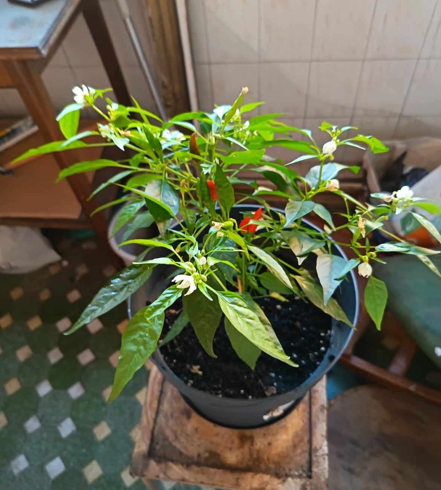

Filozofia PULA:O Punte către o Lume Fără Bani
Dincolo de umor și de agitația pieței crypto, PULA of Dracula este un experiment cu o miză profundă: explorarea unei tranziții către o societate post-financiară. Ne folosim de unelte moderne nu pentru a perpetua sistemul, ci pentru a-i testa limitele și a imagina alternative.
Critica Simbolului: Banii vs. Bogăția
Inspirati de Alan Watts, recunoaștem eroarea fundamentală a omului modern: confundăm simbolul (banii) cu realitatea (bogăția). Alergăm după cifre pe un ecran, uitând de bogăția reală: timpul liber, comunitatea, sănătatea ecosistemului. PULA, ca "unitate de plată", este un simbol folosit ironic pentru a ne reaminti de această confuzie.
Principiul MIND: O Nouă Măsură a Succesului
În loc să măsurăm succesul doar prin Market Cap, PULAverse este ghidat de principiul MIND, propus de Emad Mostaque: un echilibru între Material, Inteligență, Rețea (Network) și Diversitate. Acesta este adevăratul indicator al unei societăți prospere.
🟢 P.U.L.A. Verde: Perpetuum Universal cu Lumină și Apă
Inițiativa PULA Verde este manifestul nostru ecologic. Este viziunea noastră de a "face banii să crească în copaci", redefinind valoarea într-un mod sustenabil, în spiritul lui Alan Watts de "a lăsa natura în pace". Am pornit de la un simplu experiment, "Jurnalul Ardeiului Nemuritor", pentru a demonstra că valoarea reală este generată de cele mai simple forțe ale naturii.
Ziua 1 (21 Iulie)
Legenda începe. După o săptămână de la plantare, micul nostru erou verde își face curaj și se înalță din pământul reavăn. Fragil, dar determinat.

Ziua 4 (24 Iulie)
Motorul cu clorofilă prinde turații. Se vede clar o nouă pereche de frunze, un semn că sistemul se stabilizează și începe să producă.

Ziua 8 (28 Iulie)
O săptămână de progres vizibil! Planta și-a dublat aproape înălțimea. E dovada clară că PULA Verde nu e doar o idee, ci un organism viu.

Ziua 14 (3 August)
După două săptămâni, ardeiul nostru nu mai este un răsad, ci un voinic în toată regula. Frunzele sunt mari, viguroase.

Ziua 23 (12 August)
Momentul culminant! Apar primele flori! Acesta este "Proof-of-Work"-ul suprem, dovada că sistemul se reproduce. Am făcut PULA... să înflorească!

Ziua 27 (16 August)
Planta este acum un tufiș în miniatură, plin de flori și promisiuni. Fiecare floare este un potențial "output" de valoare.

Ziua 32 (21 August)
O lună de la începutul documentării. PULA Verde este acum o entitate matură, un ecosistem în sine. Așteptăm cu nerăbdare rodul.

Momentul Adevărului: Primul Ardei PULA!
După atâta muncă (a soarelui, a apei și a clorofilei), iată și rodul! Primul ardei PULA și-a făcut apariția. Mic, verde și plin de potențial iute.

Recolta Finală:
P.U.L.A. Verde la apogeu
Ciclu complet. Am demonstrat că, dacă lași natura să lucreze și îi oferi condițiile necesare, abundența este inevitabilă. Ardeiul nostru este gata să dea gust vieții.

🌺 Cronologia Nașterii: PULA → V.U.L.V.A. → LIMBA
Există evenimente pe care calendarul popular le-a știut dintotdeauna, dar omul modern le-a uitat. PULA of Dracula le readuce în centrul scenei. Trei date. Trei momente cosmice. Un singur lanț de cauzalitate.
⚒️ 1 Mai 2026 — Ziua Abolirii Muncii
Lansarea internațională a PULA of Dracula. Ziua Muncii devine ziua în care declarăm, solemn și cu umor dacic, că munca urmează să fie abolită. Nu mâine. Dar procesul a început. PULA iese în lume.
🌺 24 Iunie 2026 — Sânzienele: Nașterea V.U.L.V.A.
În noaptea Sânzienelor, când granița dintre lumea văzută și cea nevăzută e cea mai subțire, se deschide V.U.L.V.A. — Vault for Universal Labor Value Abolishment. Cei care depun PULA în Vault primesc L.I.M.B.A. — Living Instrument for Multiplied Birth Assets — un token certificat care circulă liber în cele 9 luni de gestație. Jertfa de intrare: 1 SOL per tranzacție, vărsată într-un wallet public dedicat, vizibil live pe site, care nu permite niciodată retrageri. Jertfa rămâne. Dovada rămâne.
👶 25 Martie 2027 — Blagoveștenia: Marea Naștere
Exact 9 luni mai târziu, de Blagoveștenia — ziua Bunei Vestiri, când natura primește vestea primăverii — are loc Marea Naștere. Fiecare unitate de PULA depusă se întoarce multiplicată de 8.5x. Nu e magie. E geografie temporală: ai plantat în noaptea Sânzienelor, recoltezi de Buna Vestire. Natura știe ce face.
🌺 Ce este V.U.L.V.A.?
Vault for Universal Labor Value Abolishment. Un smart contract pe Solana care acceptă PULA, ține evidența gestației și distribuie multiplicarea la termen. Transparent, public, imuabil. Exact cum trebuie să fie.
👅 Ce este L.I.M.B.A.?
Living Instrument for Multiplied Birth Assets. Tokenul emis prin G.U.R.A. (Gateway for Universal Reproductive Asset) când bagi PULA în V.U.L.V.A. Circulă liber pe piață în cele 9 luni. Poți să-l ții, poți să-l tranzacționezi. La Marea Naștere, L.I.M.B.A. se transformă în PULA × 8.5.
🔥 Jertfa Sacră
Intrarea în V.U.L.V.A. costă 1 SOL per tranzacție. Acest SOL merge automat într-un wallet public dedicat, afișat live pe site. Nu iese niciodată. Nu poate fi retras. Este Jertfa care sfințește mecanismul și dovedește seriozitatea intenției.
Manuscrisul PULA (Whitepaper)
Pentru cei care doresc să aprofundeze toate aceste concepte, am pregătit "Manuscrisul PULA". Acesta este documentul fundamental al proiectului, unde detaliem viziunea, tokenomics-ul și planurile noastre de viitor. Conține toate informațiile necesare pentru a înțelege pe deplin complexitatea și ambiția PULAverse.